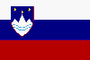

|
Länderinformationen Slowenien
1. Das Wichtigste auf einen Blick2. Sehens- und Hörenswertes
3. Politik & Gesellschaft
4. Schmeckenswertes
5. Medien
6. Reisetipps
1. Wissenswertes
|  | Hier
haben wir die wichtigsten Zahlen und Fakten zu Slowenien
und der slowenischen Sprache zusammengetragen. |
 Die
slowenische Sprache
Die
slowenische Sprache
Slowenisch gehört zu den slawischen Sprachen. Die slawischen Sprachen werden unterteilt in die ostslawische (Russisch, Weißrussisch und Ukrainisch), in die westslawische (Polnisch, Slowakisch und Tschechisch) und in die südslawische Sprachfamilie. Zu dieser letztgenannten gehört neben Bulgarisch, Mazedonisch und Serbokroatisch auch die slowenische Sprache, die Sie mit diesem Sprachkurses erlernen werden. Alle slawischen Sprachen haben ihren Ursprung im Urslawischen, das noch bis in die ersten Jahrhunderte unserer Zeitrechnung gesprochen wurde und das sich vor etwa 5.000 Jahren als eigenständiger Zweig aus dem Indogermanischen herausbildete.
Die engste Verwandtschaft weist das Slowenische mit der kroatischen Sprache auf, von der auch eine Vielzahl an Entlehnungen stammt. Das Deutsche hatte ursprünglich ebenfalls großen Einfluss auf das Slowenische, jedoch wurde seit dem 19. Jahrhundert versucht, den Gebrauch von deutschen Lehnwörtern zugunsten von Slawismen zu reduzieren. So schuf der Sprachwissenschaftler Jernej Kopitar im Jahre 1808 eine Grammatik für die slowenische Sprache, die eine Vielzahl slawischer Lehnwörter aufnahm und den Grundstein für eine Vereinheitlichung des Schriftstandards setzte.
Im Slowenischen existiert eine Reihe unterschiedlicher regionaler Dialekte, wobei die moderne Hoch- und Standardsprache eine Misch- und Ausgleichsform dieser Dialekte darstellt.
In der slowenischen Sprache wird das lateinische Alphabet verwendet – im Gegensatz zu einer Reihe anderer slawischer Sprachen, die mit kyrillischen Buchstaben geschrieben werden, wie beispielsweise Russisch und Ukrainisch.
Das slowenische Alphabet weist allerdings drei besondere Buchstaben auf:
|
č (Č) |
ausgesprochen wie deutsches „tsch“ in Tschechien | ||
|
š (Š) |
ausgesprochen wie deutsches „sch“ in Schokolade | ||
|
¸ (´) |
ausgesprochen wie weiches „sch“ in Bandage |
Einige Buchstaben werden zudem anders ausgesprochen als im Deutschen:
|
c |
ausgesprochen wie deutsches „z“ in zeigen | ||
|
h |
ausgesprochen wie deutsches „ch“ in Buch | ||
|
l |
ausgesprochen wie deutsches „l“ in Los, am
Silbenende oft auch als „u“ | ||
|
s |
ausgesprochen wie deutsches scharfes „ß“ in
Fuß | ||
|
v |
ausgesprochen wie deutsches „w“ in Wolke,
vor Konsonanten auch als „u“ | ||
|
z |
ausgesprochen wie deutsches weiches „s“ in Riese |
Die Buchstabenkombinationen „lj“ und „nj“ werden zudem jeweils als ein Laut ausgesprochen.
Slowenisch (Slovenščina) wird heute von rund 2,4 Millionen Menschen als Muttersprache gesprochen, wovon der Großteil (1,8 Millionen) in der Republik Slowenien lebt, wo es auch Amtssprache ist. Dort wird es von rund 91 % der Bevölkerung als Muttersprache gesprochen. Neben dem Slowenischen wird dort von knapp 5 % der Bewohner Serbisch und Kroatisch gesprochen.
Es gibt größere slowenischsprachige Minderheiten in Österreich, Italien, Ungarn und in den Staaten des ehemaligen Jugoslawien.
Die Zahl der Auslandsslowenen wird auf bis zu eine halbe Million geschätzt, die vor allem in Westeuropa (insbesondere Deutschland und Frankreich) und Amerika (Argentinien, Kanada und USA) leben.
Seit dem 1.Mai 2004 (dem Beginn der slowenischen EU-Mitgliedschaft) ist Slowenisch eine der offiziellen Amtssprachen der Europäischen Union.
 Bevölkerung
Bevölkerung
Slowenien hat rund zwei Millionen Einwohner und ist damit nach Luxemburg, Malta, Zypern und Estland hinsichtlich der Bevölkerung der fünftkleinste Staat der Europäischen Union. Neben der slowenischen Bevölkerungsmehrheit gibt es im Land auch zahlreiche Minderheiten, wie Serben, Kroaten, Bosniaken, Italiener, Ungarn und Roma.
Das Durchschnittsalter der slowenischen Bevölkerung liegt bei rund 41 Jahren und ist damit vergleichbar mit dem von Österreich oder Deutschland.
Die durchschnittliche Lebenserwartung liegt in Slowenien bei knapp 73 Jahren (Männer) und rund 80 Jahren (Frauen).
 Fläche
Fläche
Das slowenische Staatsgebiet umfasst rund 20.200 km² und ist damit flächenmäßig in etwa so groß wie das Bundesland Rheinland-Pfalz. Die Bevölkerungsdichte liegt bei knapp 100 Einwohnern pro km, wodurch es durchschnittlich weniger als halb so stark besiedelt ist wie Deutschland.
 Währung
Währung
Seit 2007 gilt auch in Slowenien der Euro. Ein Geldwechsel erübrigt sich somit bei einer Reise.
 Ökonomische
Situation
Ökonomische
Situation
Slowenien ist mit Abstand das wohlhabendste Land aus dem Verbund des ehemaligen Jugoslawien und bereits heute annähernd auf dem ökonomischen Stand Italiens.
Eine zentrale Einnahmequelle stellt der Tourismus dar, der alljährlich Hunderttausende an die Adriaküste, in die Alpen oder in die bezaubernden Städte wie Ljubljana und Maribor lockt.
Allerdings verfügt Slowenien ebenfalls über einen wachsenden und heute stark modernisierten industriellen Sektor, in dem vorwiegend Fahrzeuge, Maschinen, Elektronik, Holz- und Metallprodukte sowie Textilien hergestellt werden.
Die slowenische Landwirtschaft, bis vor nicht allzu langer Zeit noch von mühsamer Handarbeit und altertümlichen Gerätschaften geprägt, ist heute technisch wesentlich weiter entwickelt und moderne Maschinen nehmen den Menschen die schwere körperliche Arbeit ab. Im landwirtschaftlichen Sektor wird vornehmlich der (hervorragende!) slowenische Wein sowie Kartoffeln, Getreide, Mais und Früchte angebaut. Die Viehzucht stützt sich in erster Linie auf Schafe und Rinder.
Den am schnellsten gewachsene Wirtschaftssektor ist allerdings das Dienstleistungsgewerbe, in dem mittlerweile mehr als die Hälfte aller Beschäftigten Sloweniens tätig ist und der annähernd zwei Drittel des Brutto-Inlandsprodukts erwirtschaftet.
Die wichtigsten Handelspartner Sloweniens sind Deutschland (mit dem fast 20 % des gesamten Auslandshandels abgewickelt wird), Österreich, Italien, Frankreich und Kroatien.
 Zeitzone
Zeitzone
Slowenien liegt in der selben Zeitzone wie Deutschland, Österreich oder die Schweiz. Wie auch bei uns, erfolgt im Frühling die Umstellung auf Sommerzeit.
Im nächsten Kapitel haben wir einige ausgesuchte Reiseempfehlungen für Sie zusammengestellt.